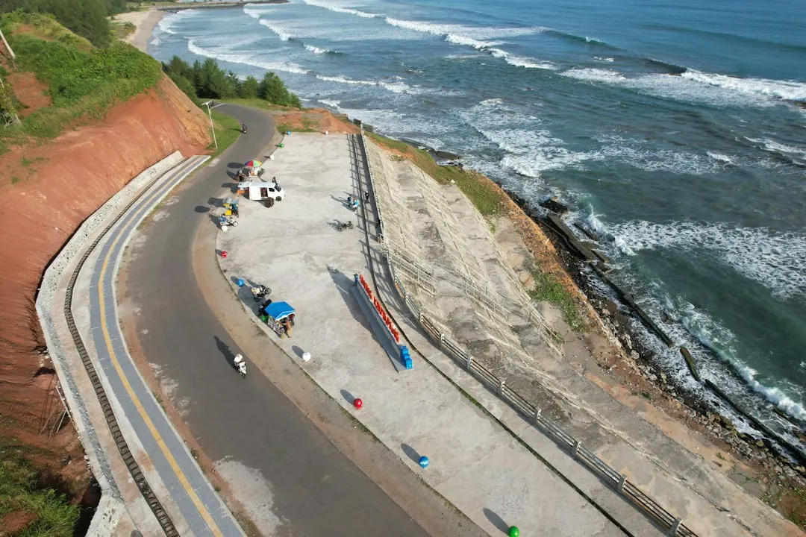

Retaining wall decisions on the Gold Coast should begin with site conditions, not the visible finish. Height, soil, groundwater, surcharge, nearby structures, access and lawful drainage can change the suitable system and project scope. Concrete sleepers, segmental blocks, timber, stone, boulders and gabions each suit different applications. Before requesting a quote, record the wall's highest point, access route, water paths, boundary constraints and any pool fence, easement or service nearby.
For homeowners comparing gold coast retaining walls, the practical starting point is a site review covering height, water, loads, access, materials and possible approval requirements.
Gold Coast Retaining Walls Explained
Gold Coast Retaining Wall presents retaining as a site-first decision because the finished face is only one part of the work. Begin by measuring the wall's highest point and noting how an excavator, materials and spoil would reach the work area. A narrow gate may rule out components that need mechanical lifting, while a sloping site may require the wall, batter and machine access to be considered together.
Record the existing levels, nearby structures, boundary position and the result you want from the project. A replacement wall, landscaped terrace, erosion-control measure or low garden wall can lead to different scope questions. Photographs from the boundary, top and bottom of the slope give a contractor or designer more useful context than a material preference alone.
- Measure the highest section rather than estimating from the lowest point.
- Describe access, storage space and the route for spoil removal.
- Note whether the wall supports a terrace, driveway, building area or pool-fence zone.
Match the material to the site
Material selection should follow the wall geometry, ground conditions, drainage needs, access and desired finish. Reinforced concrete sleepers with steel posts are presented for residential boundaries, terraces and replacement walls where a clean, low-maintenance finish is wanted. Segmental blocks suit modular landscaped terraces and engineered walls when their geometry and ground conditions are appropriate.
Timber sleeper walls are described for suitable low garden and landscape applications, with drainage and expected service life made clear before construction. Boulder and natural-stone walls can suit larger landscapes and sloping sites where batter, drainage and machine access are designed together. Gabions provide a rock-filled cage system for selected landscape, erosion and retaining applications where a textured, free-draining finish fits the setting.
Ask for the reason behind the recommendation, not just a product name. The useful comparison is how each system handles the actual height, soil, water, access and finish requirements of the site.
Treat water as part of the wall
Drainage should be resolved before excavation is closed. The published guidance identifies free-draining aggregate, geofabric and subsoil drainage as parts of a system, but they still need a lawful destination. Map surface runoff, roofwater, neighbouring levels and low points so water is not directed into a boundary or trapped behind the wall.
Ask where the outlet will discharge, how the surface above the wall will be managed and whether the existing stormwater arrangement affects the design. In wet weather, these questions become especially relevant for coastal yards, compact estates and hinterland slopes. A wall face can look suitable while the drainage route remains unresolved.
For a site with visible erosion, leaning, bulging, cracking, rotting or poor drainage, request an assessment before choosing between targeted repairs and complete replacement. A repair recommendation should explain the observed condition and the drainage work required around it.
Check approval and engineering questions
The City of Gold Coast approval criteria described by the provider are broader than a simple one-metre shortcut. Separation between walls, surcharge, nearby buildings, pool fencing, easements, services and boundary setbacks can all affect the questions that need answering. Treat the wall as an approval-aware project when one of those conditions is present.
A measured scope helps separate responsibilities. A structural engineer may need to address design questions, a private building certifier may have an approval role, and a contractor can clarify construction access and sequencing. The Queensland Building and Construction Commission can also be included in the list of bodies to ask about the relevant building work, without assuming that a general rule settles the particular site.
- Confirm the highest wall and the separation from nearby walls.
- Identify surcharge from buildings, driveways, stored materials or changed levels.
- Check easements, services, boundary setbacks and pool-fence interfaces.
- Ask which professional should confirm design or approval requirements.
Prepare a quote-ready project brief
A useful enquiry brings the wall, location, access and intended outcome together. Include dimensions, photographs, material preferences, drainage observations and any known boundary or approval constraint. The published project process asks for suburb or postcode and a description of the work so the likely scope can be reviewed more clearly.
Compare quotes by checking what is included around excavation, spoil, drainage, outlets, engineering or certification, materials, access limitations and repair assumptions. Cost can change when the highest point, groundwater, surcharge or narrow access is different from the initial description. Ask which assumptions would alter the price before comparing a headline figure.
If you are reviewing a related local guide, the companion retaining-wall planning guide can provide another starting point. Keep the final decision tied to the measured site and written scope.
- Measure the wall. Record the highest point, levels and the length of the proposed work.
- Map access. Show gates, equipment routes, material storage and spoil removal constraints.
- Trace water. Identify runoff, roofwater, low points, groundwater signs and a lawful outlet.
- List constraints. Note nearby buildings, surcharge, services, easements, setbacks and pool fencing.
- Request a written scope. Ask which material, drainage approach, approval questions and exclusions apply.
| Site question | Possible direction | What to confirm |
|---|---|---|
| Residential boundary or terrace | Concrete sleepers or segmental blocks may be considered | Height, ground conditions, finish and access |
| Larger sloping landscape | Boulders or natural stone may suit the setting | Batter, drainage and machine access |
| Low garden application | Timber sleepers may be suitable | Expected service life and drainage |
| Textured, free-draining landscape | Gabions may suit a selected application | Rock fill, erosion context and lawful water outlet |
Common questions
Is a one-metre rule enough to decide approval? No. The published guidance says approval criteria can also involve separation between walls, surcharge, nearby buildings, pool fencing, easements, services and boundary setbacks.
Which retaining material is best for every Gold Coast site? There is no single answer. Concrete, block, timber, stone, boulder and gabion systems are presented for different site conditions, finishes, drainage needs and access constraints.
What should be included in a quote request? Share the wall location, highest point, access route, photographs, intended outcome, drainage observations and any known approval or boundary issue.
What should happen when an existing wall is leaning or bulging? Request an assessment that considers the wall condition and drainage before deciding between targeted repairs and replacement.
This guide covers site scoping, material selection, drainage, approval questions and quote preparation for retaining-wall projects on the Gold Coast.